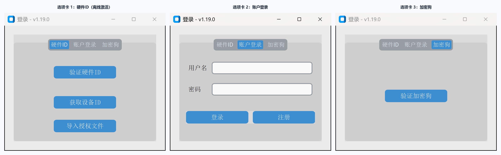
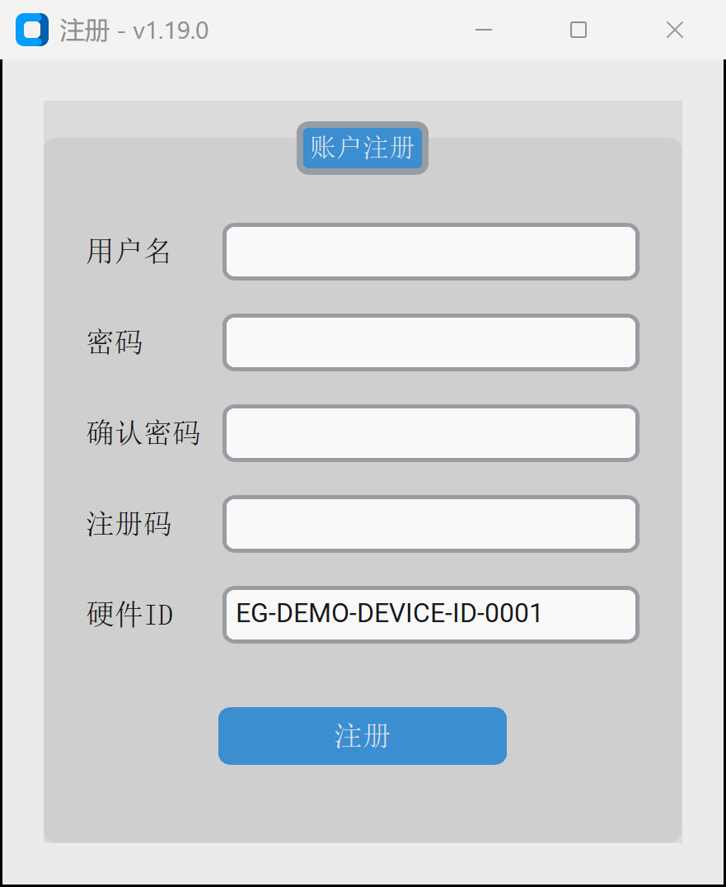
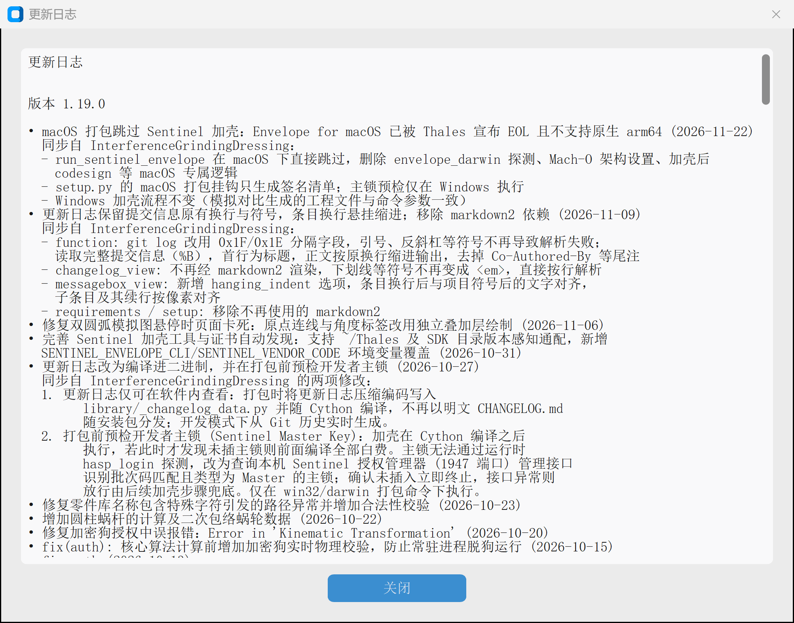

1.1 软件安装、授权与升级
一、软件安装
购买软件后联系技术支持获取对应平台安装包：
- Windows（64 位）：运行
.exe安装向导并按提示完成安装，通过桌面或开始菜单快捷方式启动。 - macOS：打开
.dmg镜像，将 EnveloGrinding 图标拖入“应用程序”文件夹后双击启动。
平台功能差异提示：
Siemens程序加密依赖 Windows 专用加密组件，仅在 Windows 版本中可用；macOS 版本中该复选框默认禁用。
二、三种授权激活方式
未检测到即插即用加密狗时，启动后进入 登录 窗口，顶部提供三个选项卡：

方式 1：硬件ID（推荐离线生产机使用）
适用于无外网环境的车间电脑或固定工作站，提供两种离线激活路径：
- 云端绑定硬件码：
- 点击
获取设备ID查看本机唯一硬件特征码并发送给技术支持； - 后台完成授权绑定后，联网点击一次
验证硬件ID，通过后即可长期离线使用。
- 点击
- 离线许可文件（
.lic）导入：- 若设备完全断网，将本机硬件特征码发给技术支持签发
eg_license.lic； - 点击
导入授权文件选择该.lic文件，验签通过后即刻激活本机永久离线授权并自动进入主界面。
- 若设备完全断网，将本机硬件特征码发给技术支持签发
方式 2：账户登录与注册
适用于需要联网使用个人账号的场景（账号已与注册时绑定的设备硬件 ID 强绑定）：
- 在
账户登录选项卡输入用户名与密码，点击登录（需保持联网）。 - 若尚未注册账号，点击右下角
注册打开注册窗口：

- 在
账户注册选项卡依次填写：用户名：自定义登录账号；密码与确认密码：两次输入需完全一致；注册码：向技术支持申请的专用注册码；硬件ID：默认自动读取本机 ID，请勿随意修改，点击注册提交完成。
方式 3：加密狗（即插即用与实时监控）
- 将已授权的 Sentinel 硬件加密狗插入电脑 USB 接口。
- 自动免登录：启动软件时检测到有效加密狗，将直接跳过登录窗口进入主界面，并在主窗口底部显示
🟢 加密狗授权已激活。 - 手动验证：若在登录界面出现后才插入加密狗，可切换到
加密狗选项卡点击验证加密狗。 - 安全与断狗保护：软件每 3 秒自动校验加密狗在线状态并在核心计算前二次验签；使用过程中拔出加密狗将触发保护并自动关闭程序。
三、在线升级与更新日志
- 检查更新：点击顶部菜单
设置检查更新，软件自动向服务器查询最新版本。若发现新版本，确认后自动下载安装包（实时显示下载速度与百分比进度）并引导安装。 - 查看更新日志：点击顶部菜单
设置更新日志，可浏览从历史版本至当前v1.19.0的全部功能新增与问题修复记录：
